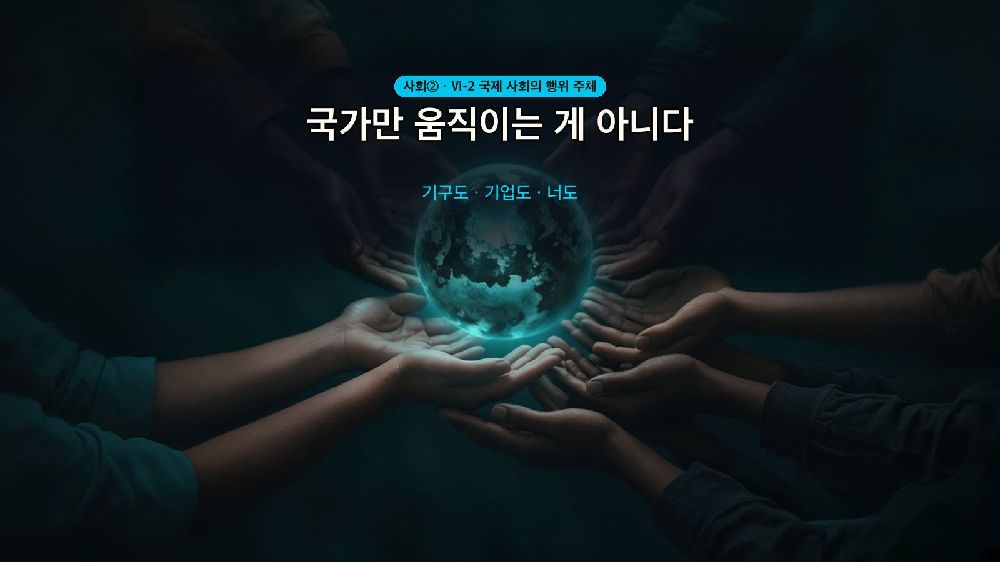
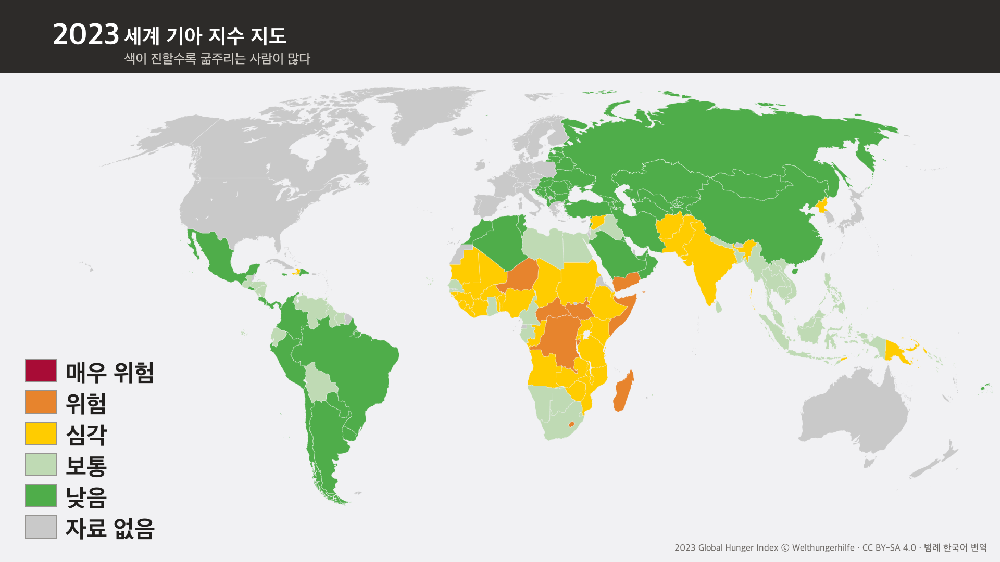
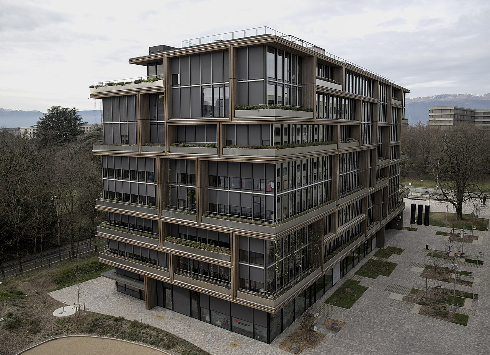
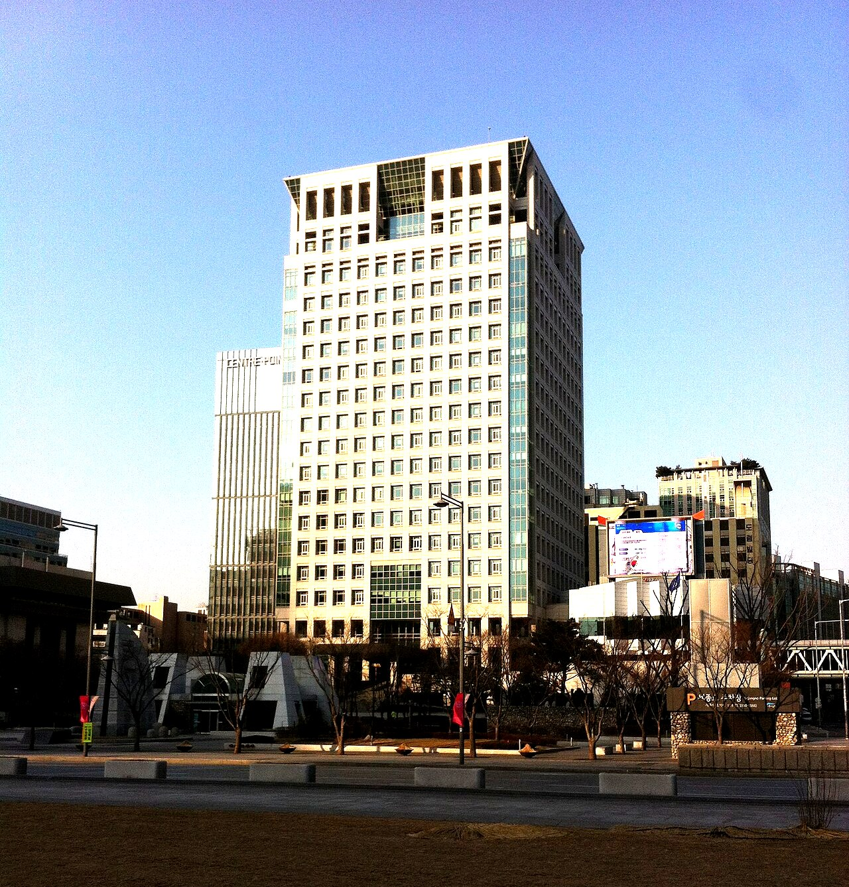

사회② 국제 사회와 국제 정치 6-2차시 — 기아로 굶는 7억 9,500만 명, 이건 누가 해결하나? (국제 사회의 행위 주체)
기아로 굶는 7억 9,500만 명 — 이건 누가 해결하나?
그 나라 정부가 일차적으로 나서야 한다. 그런데 내전으로 정부가 제 기능을 못 하거나 가뭄으로 흔들릴 때가 있다. 🔑 그때부터 국가 말고 다른 것들이 움직인다 — 오늘 배울 행위 주체들이다.
누가 만들었느냐로 갈린다.
| 만든 쪽 | 예 | |
|---|---|---|
| 정부 간 국제기구 | 정부들이 모여서 | 국제 연합 · 세계 무역 기구 |
| 국제 비정부 기구 | 사람들이 모여서 | 국경 없는 의사회 · 그린피스 |
🔴 이름이 영어인지 한국어인지는 상관없다. 그린피스는 이름이 외국어지만 민간단체다.
민간단체가 메운다. 정부 간 국제기구는 회원국 각자의 이익을 살펴야 해서 선뜻 나서지 못할 때가 있다. 🔑 오늘날 국제 비정부 기구가 그토록 많은 이유가 여기 있다.
🔴 될 수 있다. 교과서가 못 박아 놓았다 — 소수 인종·소수 민족·지방 자치 단체뿐 아니라 개인도 국제 사회의 행위 주체가 될 수 있다.

🎙️ 지난 시간에 국제 사회에는 중앙 정부가 없다고 했지. 그럼 아무도 안 움직일까? 아니야 — 오히려 움직이는 쪽이 여럿이야. 오늘은 그 여럿의 이름을 하나씩 붙여 본다.
📌 학습 목표
- 국제 사회의 행위 주체를 열거할 수 있다.
- 정부 간 국제기구와 국제 비정부 기구를 구분할 수 있다.
✨ 오늘의 고급 단어
주체(主體) — 오늘 제목에 든 말이다. 주(主, 주인) + 체(體, 몸). 스스로 정해서 움직이는 쪽을 뜻한다.
6-1에서 배운 주권(主權)의 그 主다. 주권이 "스스로 정할 힘"이라면, 주체는 그 힘으로 실제로 움직이는 쪽이다.
⚠️ 반대는 대상이다. 회의에서 말하는 쪽이 주체고 이야기되는 쪽이 대상이다. 오늘은 "누가 말할 수 있나"를 본다.
그림을 먼저 보고 무슨 말일지 짐작해 봐. 카드를 누르면 뜻이 열려.
📷 세계 기아 지수 지도 (Welthungerhilfe · CC BY-SA 4.0 · 범례 한국어) · 일본-캐나다 정상회담 (일본 정부 · CC BY 4.0) · 그린피스 레인보우 워리어호 (Raymond L. Blazevic · CC BY 2.0) · 서울 방배동 맥도날드 (LERK · CC BY-SA 4.0) — Wikimedia Commons
🔑 交 는 6-1에서 배운 국제 사회의 정의에 이미 있었어 — "여러 나라가 서로 교류하고 의존하며 공존하는 사회". 그 교(交)가 외교의 교야.
📖 1단계: 굶는 사람이 7억 9,500만 명
📕 교과서 114쪽 펴고 · 배정 시간 6분
전 세계 인구의 9분의 1이 기아 상태다. 유럽에 사는 사람을 전부 합한 것보다 많다.

🎙️ 이 문제를 푸는 건 일단 그 나라 정부야. 그런데 내전으로 정부가 제 기능을 못 하면? 그때부터가 오늘 이야기다.
📖 2단계: 가장 기본은 국가
📕 교과서 114쪽 펴고 · 배정 시간 8분
국가는 국제 사회의 대표적인 ①다. 모든 국가는 ②의 원칙에 따라 국제법 앞에서 평등한 주체로 인정받는다. 인구·면적·군사력이 달라도 법적으로는 평등하게 대우받는다는 뜻이다.
각국은 자국의 이익을 추구하고 자국민을 보호하기 위해 ③ 활동을 하고, 국제기구에 대표를 보내 공식 활동을 한다.
🎙️ 6-1에서 배운 힘의 논리랑 부딪히는 것 같지? 맞아. 법적으로는 평등한데 실제 영향력은 다르다 — 이 간극이 국제 사회를 이해하는 열쇠야.
📖 3단계: 국제기구는 왜 둘로 갈리나

정부들이 모여 만든 기구가 ④다. 국제 연합과 세계 무역 기구가 여기에 든다.
사람들이 모여 만든 ⑤도 있다. 국경을 넘어 활동하는 ⑥로, 국경 없는 의사회와 그린피스가 대표적이다.
갈림길은 이름이 아니라 누가 만들었나다. 이름이 영어로 되어 있다고 정부 간 기구인 것이 아니다.
그린피스는 이름이 외국어지만 사람들이 만든 민간단체이고, 국제 연합은 정부들이 모여 만든 기구다.
📖 4단계: 그리고 기업과 개인
📕 교과서 115쪽 펴고 · 배정 시간 6분
세계화로 기업 규모가 커지면서 여러 나라에 진출한 ⑦의 영향력도 커졌다. 한 나라의 일부인 소수 민족·지방 자치 단체, 그리고 ⑧까지도 국제 사회의 행위 주체가 될 수 있다.
정부 간 국제기구는 회원국 각자의 이익을 살펴야 해서 선뜻 나서지 못할 때가 있다. 그 자리를 민간단체가 메운다.
오늘날 국제 비정부 기구가 그토록 많은 이유다.
✏️ 활동 1 — 이건 누구일까?



📷 국제 연합 사무국 건물 (Steve Cadman · CC BY-SA 2.0) · 국경 없는 의사회 제네바 사무소 (Marmolada48 · CC BY 4.0) · 그린피스 레인보우 워리어호 (Raymond L. Blazevic · CC BY 2.0) · 외교부가 있는 정부서울청사 별관 (Hoseoklee88 · CC BY-SA 3.0) — 모두 Wikimedia Commons. 마지막 사진은 밝기만 조정했다.
✅ 스스로 점검 — 이름을 보고 골랐다면 다시 보자. 기준은 하나야 — 누가 만들었나.
❓ OX 퀴즈
| 번호 | 문장 | O/X |
| 1 | 국가는 크기와 상관없이 국제법 앞에서 평등한 주체로 인정받는다. | |
| 2 | 소수 민족이나 개인은 국제 사회의 행위 주체가 아니다. | |
| 3 | 국제 연합과 세계 무역 기구는 정부 간 국제기구다. | |
| 4 | 이름이 외국어로 된 기구는 정부 간 국제기구로 볼 수 있다. | |
| 5 | 정부 간 국제기구가 회원국 이익을 살피느라 나서기 어려울 때 국제 비정부 기구가 활동하기도 한다. |
🧠 핵심 3줄 (교과서 덮고!)
오늘 배운 걸 안 보고 세 줄로 적어 보자. 틀려도 괜찮아 — 떠올리려고 애쓰는 그 순간에 머리에 박히는 거야.
✍️ 낱말 세 개가 아니라 문장 세 개로. 각 줄이 ~다. 로 끝나게 쓰자.
1.
2.
3.
💭 더 생각해 보기
기아 문제를 푸는 일은 일단 그 나라 정부의 몫이다. 그런데 내전으로 정부가 제 기능을 못 하는 나라라면 누가 나서야 할까? 오늘 배운 행위 주체 가운데 둘 이상을 들어, 각각 무엇을 할 수 있을지 한두 문장으로 써 보자.
📎 각주
- 교과서: 천재교육 사회②(구정화) 114~115쪽
- 앞 차시: [[6-1차시 국제사회의의미와특성 개념편]] — 국제 사회에 중앙 정부가 없다는 것